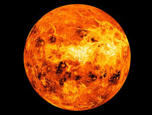
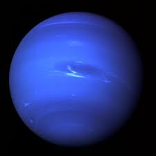

Mercury
SMALLEST
Mercury is the smallest planet in our solar system—only slightlylarger than Earth's Moon.
INSIDER
It is the closest planet to the Sun at a distance of about 36 million miles (58 million kilometers) or 0.39 AU.
LONG DAYS, SHORT YEARS
One day on Mercury (the time it takes for Mercury to rotate or spin once with respect to the stars) takes 59 Earth days. One day-night cycle on Mercury takes 175.97 Earth days. Mercury makes a complete orbit around the Sun (a year in Mercury time) in just 88 Earth days.


Venus
EARTH-SIZED
If the sun were as tall as a typical front door, the Earth and Venus would each be about the size of a nickel.
SECOND ROCK
Venus orbits our Sun, a star. Venus is the second closest planet to the sun at a distance of about 67 million miles (108 million km).
A DAY LONGER THAN A YEAR
One day on Venus lasts 243 Earth days because Venus spins backwards, with its sun rising in the west and setting in the east.
Earth
MEASURING UP
If the Sun were as tall as a typical front door, Earth would be the size of a nickel.
THIRD ROCK
Earth orbits our Sun, a star. Earth is the third planet from the Sun at a distance of about 93 million miles (150 million km).
AS THE WORLD TURNS
A day on Earth is 24 hours. Earth makes a complete orbit around the sun (a year in Earth time) in about 365 days.


Mars
SMALL PLANET
If the Sun were as tall as a typical front door, Earth would be the size of a dime, and Mars would be about as big as an aspirin tablet.
FOURTH ROCK
Mars orbits our Sun, a star. Mars is the fourth planet from the Sun at an average distance of about 228 million km (142 million miles) or 1.52 AU.
LONGER DAYS
One day on Mars takes a little over 24 hours. Mars makes a complete orbit around the Sun (a year in Martian time) in 687 Earth days.
Saturn
A COLOSSAL PLANET
Nine Earths side by side would almost span Saturn’s diameter. That doesn’t include Saturn’s rings.
IN DIM LIGHT
Saturn is the sixth planet from our Sun (a star) and orbits at a distance of about 886 million miles (1.4 billion kilometers) from the Sun.
SHORT DAY, LONG YEAR
Saturn takes about 10.7 hours (no one knows precisely) to rotate on its axis once—a Saturn “day”—and 29 Earth years to orbit the sun.


Jupiter
THE GRANDEST PLANET
Eleven Earths could fit across Jupiter’s equator. If Earth were the size of a grape, Jupiter would be the size of a basketball.
SHORT DAY/LONG YEAR
Jupiter rotates once about every 10 hours (a Jovian day), but takes about 12 Earth years to complete one orbit of the Sun (a Jovian year).
FIFTH PLANET FROM OUR STAR
Jupiter orbits about 484 million miles (778 million kilometers) or 5.2 Astronomical Units (AU) from our Sun (Earth is one AU from the Sun).
Uranus
HUGE
Uranus is about four times wider than Earth. If Earth were a large apple, Uranus would be the size of a basketball.
SEVENTH WANDERER
Uranus orbits our Sun, a star, and is the seventh planet from the Sun at a distance of about 1.8 billion miles (2.9 billion kilometers).
SHORT-ISH DAY, LONGISH YEAR
Uranus takes about 17 hours to rotate once (a Uranian day), and about 84 Earth years to complete an orbit of the Sun (a Uranian year).

